무선설비산업기사 (2002-05-26 기출문제)
1과목: 디지털 전자회로
1. 다음 카아르노프도의 간략식은 ?
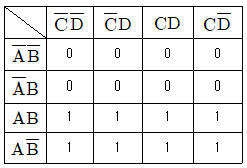
- Y = A
- Y = B
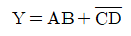
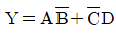
(정답률: 알수없음)

2. 트랜지스터 증폭회로에서 저항 R1의 역할은?
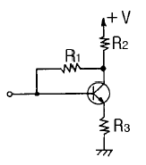
- 입력 임피던스 조절
- 바이어스 안정화
- 부궤환 작용
- 부하저항
(정답률: 65%)
3. 다음 진리표의 Karnaugh map을 작성한 것중 옳은 것은 ?
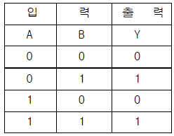
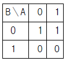
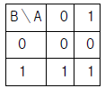
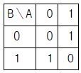
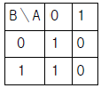
(정답률: 알수없음)
4. 그림과 같은 회로의 출력 논리식이 아닌 것은 ?
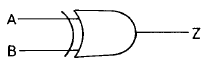


(정답률: 알수없음)
5. 다음 그림의 회로는 무슨 회로인가 ?
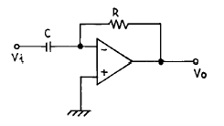
- 미분기
- 적분기
- 가산기
- 증폭기
(정답률: 82%)
6. 그림(a)의 회로에 그림(b)와 같은 파형전압을 인가하면 출력 전압파형은 ?
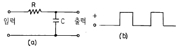
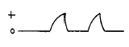
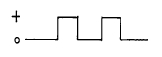
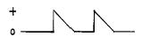
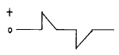
(정답률: 70%)
7. 다음 궤환증폭기의 특성에 관한 설명중 틀리는 것은 ?
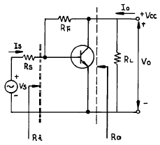
- 궤환으로 입력 임피이던스 Ri는 감소한다.
- 궤환으로 출력 임피이던스 Ro는 감소한다.
- 궤환으로 전류이득 Io/Is는 감소한다.
- RF가 작을수록 출력전압 Vo는 커진다.
(정답률: 알수없음)
8. 논리식 A(A+B+C)를 간단히 하면 어느 값과 같은가 ?
- 1
- 0
- B+C
- A
(정답률: 알수없음)
9. 다음 중 직류전원회로의 구성 순서로 옳은 것은 ?
- 정류회로 → 변압회로 → 평활회로 → 정전압회로
- 변압회로 → 정류회로 → 평활회로 → 정전압회로
- 변압회로 → 평활회로 → 정류회로 → 정전압회로
- 변압회로 → 정류회로 → 정전압회로 → 평활회로
(정답률: 알수없음)
10. 반가산기(Half-adder)의 구성 요소로 맞는 것은 ?
- JK 플립플롭
- 두개의 AND 게이트
- EOR과 AND 게이트
- 1개의 반동시 회로와 OR 게이트
(정답률: 알수없음)
11. 진폭 변조파의 전압 e(t)가 다음과 같이 표시되었을 때 변조도는 몇[%]인가 ?
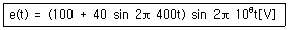
- 80
- 70
- 40
- 20
(정답률: 알수없음)
12. 다음 그림은 어떤 플립 플롭(Flip-Flop)회로인가 ?
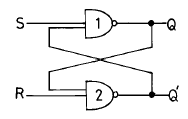
- Basic F-F
- J-K F-F
- D F-F
- T F-F
(정답률: 46%)
13. 그림과 같은 에미터 저항을 가진 CE 증폭기에서 에미터 저항 RE 의 가장 중요한 역할은 무엇인가 ?
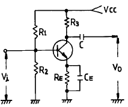
- S(안정계수)를 감소시켜 동작점이 안정된다.
- 주파수 대역을 증가시킨다.
- 바이어스 전압을 감소 시킨다.
- 증폭회로의 출력을 증가시킨다.
(정답률: 알수없음)
14. 실리콘 제어 정류소자(SCR)의 전류 - 전압 특성곡선은 어느 것인가 ?
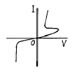
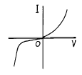
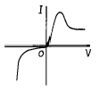
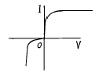
(정답률: 알수없음)
15. Schmitt 트리거회로의 응용 예로 틀린 것은 ?
- 전압비교회로
- 방형파회로
- 쌍안정회로
- 증폭회로
(정답률: 알수없음)
16. 다음은 리플 카운터(ripple counter)이다. 초기 상태 A=0, B=0, C=0 이었다면 클럭 펄스가 12개 인가된 후의 상태는?
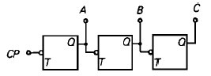
- A=0, B=0, C=1
- A=0, B=1, C=1
- A=1, B=1, C=0
- A=1, B=0, C=0
(정답률: 54%)
17. 에미터 접지일 때 전류증폭율이 각각 hFE1, hFE2인 두개의 트랜지스터 Q1과 Q2를 그림과 같이 접속하였을 때의 콜렉터 전류 Ic의 크기는?
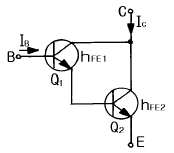
- hFE1· hFE2· IB
- (hFE1· hFE2)· IB
- hFE2(hFE1+1)· IB
- hFE1· IB + hFE2(hFE1+1)· IB
(정답률: 알수없음)
18. 다음의 발진회로에서 L = 10[mH], C1 = C2 = 800[pF]일 때 공진주파수는 약 몇 [kHz]인가?
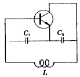
- 10[kHz]
- 20[kHz]
- 40[kHz]
- 80[kHz]
(정답률: 알수없음)
19. 주파수 변조방식이 진폭변조방식보다 좋은 점이 아닌것은?
- S/N비가 개선된다.
- 에코우의 영향이 적다.
- 초단파대의 통신에 적합하다.
- 점유 주파수 대역폭이 좁아 송신효율이 좋다.
(정답률: 알수없음)
20. 연속적으로 반복되는 펄스 파형에서 펄스 1개의 "1" 구간이 1[msec]이고, "0" 구간이 1[msec]이다. 이 파형의 주파수는 얼마인가?
- 0.5[KHz]
- 1[KHz]
- 2[KHz]
- 1[MHz]
(정답률: 알수없음)
2과목: 무선통신 기기
21. 정류회로의 리플함유율을 감소시키는 방법으로 부적합한 것은 ?
- 입력측보다 출력측 평활용 콘덴서 용량을 적게한다.
- 평활용 쵸오크의 인덕턴스를 크게 한다.
- 입력 전원의 주파수를 높게 한다.
- 쵸오크 입력형으로 한다.
(정답률: 알수없음)
22. 안테나의 실효저항의 측정법에 해당되지 않은 것은 ?
- 저항 변화법
- 코일 변화법
- 작도법
- 치환법
(정답률: 알수없음)
23. 그림과 같은 전원 평활회로에서 출력전압의 맥동분을 적게 하려면 ?
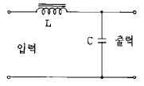
- L을 크게하고 C를 작게한다.
- L을 작게하고 C를 크게한다.
- L과 C를 모두 작게한다.
- L과 C를 모두 크게 한다.
(정답률: 알수없음)
24. 주파수 변조에서 최대주파수 편이가 10[㎑],변조주파수가 3[㎑]일때 주파수 대역폭은 ?
- 26[㎑]
- 13[㎑]
- 10[㎑]
- 3[㎑]
(정답률: 알수없음)
25. FM송신기에서 사용되는 pre-emphasis회로에 관한 설명중 옳은 것은?
- pre-emphasis회로에서 출력전압은 주파수에 반비례한다.
- pre-emphasis회로를 사용하므로 선택도가 개선된다.
- 전력증폭율을 높혀준다.
- S/N비를 개선시킨다.
(정답률: 알수없음)
26. 오실로 스코우프로 전압을 측정한 결과 그림과 같은 파형을 얻었다. 실효값은 몇[V]인가 ? (단,오실로 스코우프의 편향감도는 b[㎜/V]이다.)
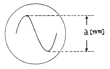
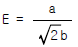
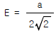
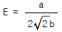
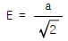
(정답률: 알수없음)
27. 3[㎑]로 진폭 변조한 결과 상측파대의 출력이 전체 전력의 0.1배 이었다. 변조도는 약 얼마인가 ?
- 50[%]
- 60[%]
- 70[%]
- 80[%]
(정답률: 알수없음)
28. 다음 중에서 무선수신기에 고주파 증폭기를 붙이는 목적으로서 틀리는 것은 ?
- 신호대 잡음비를 높인다.
- 선택도를 좋게 한다.
- 페이딩(fading)을 방지한다.
- 이득을 높인다.
(정답률: 알수없음)
29. AM방식의 변조도 ma=1 FM 방식의 변조지수 mf =1인 경우 C/N은 몇 [㏈] 개선되는가? (단 수신기의 입력은 동일하다.)
- 4.7[㏈]
- 6[㏈]
- 10.7[㏈]
- 12.4[㏈]
(정답률: 20%)
30. 마이크로파 통신방식에서 무급전 중계의 전파(電播)손실을 경감하기 위한 요건이다. 맞는 것은?
- 반사판의 면적을 적게한다.
- 반사판에의 입사각을 90° 에 가깝게 한다.
- 송수신간의 거리를 되도록 멀게한다.
- 반사판의 위치는 가급적 송수신점의 중앙에 설치한다.
(정답률: 28%)
31. 동일한 주파수를 재생할 수 있는 기지국간의 최소거리 D는? (단, R은 셀의 반경이며 K는 한 서비스 지역내의 셀의 수 이다.)
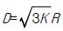
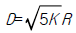
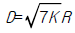
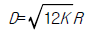
(정답률: 알수없음)
32. 음성신호를 PCM 신호로 만들기 위해 샘플링을 하였다. 이때 엘리어싱(Aliasing)을 피하기 위해 샘플링 주파수를 최소한 얼마 이상으로 해야 하는가? (단, 음성신호의 최대 주파수는 4 ㎑ 이다.)
- 4 ㎑
- 8 ㎑
- 10 ㎑
- 12 ㎑
(정답률: 알수없음)
33. SSB 점유 주파수 대역폭은 DSB에 비해 몇 배인가?
- 14 배
- 12 배
- 2 배
- 4 배
(정답률: 알수없음)
34. 슈퍼헤테로다인 수신기에서 영상혼신을 경감시키는 방법이 아닌 것은?
- 고주파 증폭단의 선택도를 높인다.
- 동조회로의 Q을 낮춘다.
- 중간 주파수를 높게 선정한다.
- 이중 슈퍼헤테로다인 방식으로 한다.
(정답률: 알수없음)
35. 진폭 변조 회로의 출력을 Oscilloscope로 측정하였더니 다음 그림과 같았다.a = 2b이면 변조율은 ?
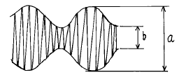
- 80[%]
- 50[%]
- 33.3[%]
- 25[%]
(정답률: 알수없음)
36. 마이크로파 무급전 중계 방식에서 전파 손실을 경감시키기 위한 방법으로 타당하지 않은 것은?
- 반사판의 크기 또는 송·수신 안테나의 이득을 크게 한다.
- 반사판의 반사각도를 가능한 직각에 가깝게 한다.
- 송· 수신 안테나의 거리를 짧게 한다.
- 사용 주파수를 낮게 한다.
(정답률: 알수없음)
37. FM 수신기에서 진폭제한기에 대한 설명중 틀린 것은 ?
- 진폭제한기는 중간 주파증폭기의 앞단에 접속된다.
- 충격성 잡음의 영향을 경감할 수 있다.
- 일정한 레벨이상이 되면 그 이상의 레벨을 제한한다.
- 진폭제한기를 종속접속하면 그 효과가 크다.
(정답률: 알수없음)
38. SSB통신방식에서 Ring변조회로는 어떤 변조 방식인가?
- 콜렉터 변조
- 에미터 변조
- 평형 변조
- 위상 변조
(정답률: 알수없음)
39. AM 수신기와 비교하여 FM수신기의 특징이 아닌 것은 ?
- AGC 회로가 사용되는 것.
- 통과 대역폭이 넓은 것.
- 진폭제한기를 사용하는 것.
- 스켈치회로가 사용되는 것.
(정답률: 알수없음)
40. 이동통신 기지국에는 송신안테나 1개, 수신안테나 2개로 구성되어 있다. 수신용 안테나가 2개인 가장 타당한 이유는?
- 공간 다이버시티용 안테나 임
- 주파수 다이버시티용 안테나 임
- 편파 다이버시티용 안테나 임
- 예비용 안테나 임
(정답률: 알수없음)
3과목: 안테나 개론
41. 다음 중 잘못된 것은 ?
- 동축 케이블은 불평형이다.
- 평행 2선식은 folded dipole과 직접 연결하여 많이 사용한다.
- 동축 케이블은 낮은 주파수를 전송하면 손실도 적다.
- 평행 2선식 급전선의 특성 임피던스는
 이다. (D는 간격, d는 선로의 직경이다.)
이다. (D는 간격, d는 선로의 직경이다.)
(정답률: 알수없음)
42. 어떤 무선국에서 주간에 10[㎒]의 전파를 쓰고 있었으나 오후 10시경 상대방의 감도가 떨어져 야간파로 사용 주파수를 전환 하였다고 한다. 전환된 주파수로 타당한 것은?
- 8[㎒]
- 10[㎒]
- 15[㎒]
- 20[㎒]
(정답률: 알수없음)
43. 초단파가 가시거리를 넘어서 이례적으로 멀리 전파하는 일이 있는데 그 원인이 아닌 것은?
- 대류권 산란에 의한 전파
- 산악회절파에 의한 전파
- F층의 반사에 의한 전파
- 초굴절 또는 라디오 덕트에 의한 전파
(정답률: 알수없음)
44. 루프(loop)안테나에 관한 설명으로 옳지 못한 것은 ?
- 실효길이는 권수에 비례하고 파장에 반비례한다.
- 루프 안테나의 수평면내 지향특성은 8자형이다.
- 전파도래 방향과 루프면이 일치할 때 최대 감도이다.
- 급전선과 정합이 쉬워 효율이 좋다.
(정답률: 알수없음)
45. 원거리 통신에 이용될 수 있는 것은 어느 성분인가 ?
- 정전계
- 정자계
- 유도계
- 복사계
(정답률: 알수없음)
46. 단파통신의 일반적 특징이 아닌 것은 ?
- 소전력으로 원거리통신이 가능하다.
- 장파에 비해 공전의 방해가 크다.
- 페이딩(fading)의 영향을 받는다.
- 델린저(dellinger)현상의 영향을 받는다.
(정답률: 알수없음)
47. 지향성에 관한 설명으로 옳지 않는 것은?
- 전계강도의 상대값으로 표시한 것은 field pattern이라 한다.
- λ /2다이폴를 수직으로 설치했을 때 수평면내 지향성이 E면 지향성이다.
- 동일 안테나인 경우 field pattern과 power pattern의 모양은 다르다.
- 공중선을 포함하는 평면 내에서의 지향성을 E면 지향성이라 한다.
(정답률: 44%)
48. 가장 이상적인 VSWR 값은?
- 0
- 1
- 2
- 3
(정답률: 알수없음)
49. 선박용 레이다 송신기에 가장 많이 사용되는 안테나는?
- 헤리컬(Helical)안테나
- 애드콕(Adcock)안테나
- 파라보라(Parabola)안테나
- 루우프(Loop)안테나
(정답률: 알수없음)
50. E층의 임계주파수가 4[㎒], 높이가 100[㎞] 이고 송수신점간의 거리가 200[㎞] 이다. 이때 MUF는 ?
- 4[㎒]
- 5.6[㎒]
- 2.8[㎒]
- 8[㎒]
(정답률: 알수없음)
51. 송신안테나의 이득을 Gt, 수신안테나의 이득을 Ga, 송신 전력을 Wt[W]라하면 수신안테나에서 취할 수 있는 최대전력 Wa[W]는 얼마인가 ? (단, λ [m]는 사용파장, d[m]는 송신안테나와 수신안테나 사이의 거리이다.)
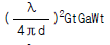
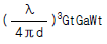
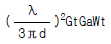
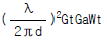
(정답률: 알수없음)
52. 미소다이폴과 반파장 다이폴안테나에 같은 크기의 복사 전력을 공급하였을 때 최대복사 방향으로 수신점의 전력의 비를 구하면 얼마인가 ?
- 1
- 1.09
- 1.31
- 1.51
(정답률: 알수없음)
53. 2개의 반파장 안테나를 아래의 그림과 같이 y축에 나란히 하여 위상차 δ =π /2로 했을 때, 안테나 합성 지향성은 어떻게 되는가 ?
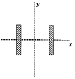
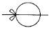
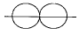
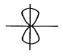
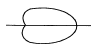
(정답률: 알수없음)
54. 특성 임피이던스가 50[Ω] 인 동축케이블에 140[Ω] 의부하를 접속하였다. 정합시키기 위하여 λ /4 길이의 동축케이블을 삽입하고자 한다면 삽입케이블의 임피이던스를 얼마로 하여야 하는가 ?
- 52.46[Ω]
- 83.67[Ω]
- 90.43[Ω]
- 140[Ω]
(정답률: 알수없음)
55. 원 편파를 복사하는 안테나에 속하는 것은 ?
- 헤리컬(helical)안테나
- 롬빅(rhombic)안테나
- 야기(Yagi)안테나
- T형 안테나
(정답률: 알수없음)
56. 다음 중 웨이브(Wave)안테나의 특징이 아닌 것은?
- 광대역 지향성 수신 안테나이다.
- 주로 단파대 수신용 안테나이다.
- 진행파 안테나의 일종이다.
- 동일 방향에서 도래하는 몇 개의 전파를 동시에 수신할 수 있다.
(정답률: 알수없음)
57. 턴 스타일(turnstyle) 안테나의 수평면내 지향 특성은 ?
- 전방향 지향성
- 단방향 지향성
- 양방향 지향성
- 심장형 지향성
(정답률: 알수없음)
58. 다음 중 도파관의 전기적 성질에 대한 설명으로 옳은 것은?
- 사용파장이 차단파장보다 길 때 도파관내에서 전파전송이 가능하다.
- 속이 빈 도파관에서는 TEM파가 존재할 수 있다.
- 관내파장은 자유공간에서보다 짧다.
- 특성임피던스는 관내 전계강도와 자계강도의 비이다.
(정답률: 알수없음)
59. λ/4 수직 접지 안테나의 길이가 15[m] 일때 고유 주파수는 얼마인가?
- 4[㎒]
- 4.5[㎒]
- 5[㎒]
- 5.5[㎒]
(정답률: 50%)
60. 등가지구 반경계수에 관한 설명중 틀린 것은?
- 전파투시도(profile)의 작성에 사용한다.
- 온대지방의 표준대기에서 그 값은 4/3을 택한다.
- 전파시계 거리를 생각할 때 만곡한 전파통로를 직선으로 간주하도록 한다.
- 기하학적 가시거리를 구할 때 사용한다.
(정답률: 알수없음)
4과목: 전자계산기 일반 및 무선설비기준
61. 데이터의 길이가 2byte이면 몇 니블(nibble)에 해당되는 가 ?
- 2
- 4
- 6
- 8
(정답률: 알수없음)
62. 운영체제(OS)의 목적과 관계가 먼 것은 ?
- 처리능력의 증대
- 응답시간의 단축
- 신뢰도의 향상
- 응용소프트웨어의 개발
(정답률: 알수없음)
63. 마지막으로 입력한 것이 제일먼저 출력된다면 이 S/W의 자료구조는?
- FIFO
- LIFO
- LILO
- FILO
(정답률: 알수없음)
64. 무선국의 개설허가의 유효기간이 1년인 것은?
- 실험국
- 기지국
- 선박국
- 아마추어국
(정답률: 알수없음)
65. 100MHz ∼ 470MHz의 주파수를 사용하는 지구국의 주파수 허용편차는? (단위 : 백만분율)
- 5
- 10
- 20
- 50
(정답률: 알수없음)
66. 컴퓨터의 본체 구성에서 주요 기본장치가 아닌 것은 ?
- 제어장치
- 기억장치
- 연산장치
- 정보처리장치
(정답률: 알수없음)
67. 무선설비에 사용되는 고압전기의 표현으로 맞는 것은?
- 500볼트를 초과하는 3상 전압
- 600볼트를 초과하는 직류전압과 750볼트를 초과하는 고주파 및 교류 전압
- 700볼트를 초과하는 고주파 및 교류 전압과 600볼트를 초과하는 직류전압.
- 600볼트를 초과하는 고주파 및 교류 전압과 750볼트를 초과하는 직류전압
(정답률: 알수없음)
68. 컴퓨터의 주메모리(main memory)장치에 널리 사용 되는 것은 ?
- 자기테이프
- 플로피 디스크
- 하드 디스크
- 반도체 IC 메모리
(정답률: 알수없음)
69. 전파법에 규정된 송신설비란?
- 송신장치와 이에 부가되는 장치
- 무선통신의 송신을 위한 설비와 그 부가장치
- 전파를 보내는 설비로서 송신장치와 송신공중선계로 구성되는 설비
- 송신장치에서 발생하는 고주파에너지를 공간에 복사하는 설비
(정답률: 알수없음)
70. 텔레비전방송을 하는 방송국의 무선설비의 점유주파수대폭의 허용치는 얼마인가?
- 100Hz
- 3kHz
- 180kHZ
- 6MHz
(정답률: 알수없음)
71. 다음중 전자파적합등록 대상기기는 어느 것인가 ?
- 전기통신기본법에 의한 형식승인을 얻은 전기통신 기자재
- 자동차관리법에 의한 형식승인을 얻은 자동차
- 약사법에 의한 품목허가를 받은 의료용구
- 가정용 전기기기 및 전동기기류
(정답률: 알수없음)
72. ASCII 코드에서 문자 표시는 몇 비트 (bit)로 구성되어 있는가 ?
- 5
- 6
- 7
- 8
(정답률: 알수없음)
73. 다음 중 수신설비의 충족조건에 해당하지 아니한 것은?
- 선택도가 클 것
- 정합이 충분할 것
- 내부잡음이 적을 것
- 수신주파수의 범위가 적정할 것
(정답률: 알수없음)
74. 전력선반송설비와 유도식통신설비에서 발사되는 주파수 허용편차는 얼마로 규정하고 있는가?
- 0.1퍼센트
- 0.3퍼센트
- 0.5퍼센트
- 1.0퍼센트
(정답률: 알수없음)
75. 기억장치의 내용을 보기 위하여 화면이나 프린터 등으로 뽑아보는 것을 무엇이라고 하는가 ?
- Debugging
- Dump
- Coding
- Loader
(정답률: 알수없음)
76. 복수개의 입출력 단자를 가지며 입력단자중 한 단자에 신호(1 bit)가 가해질 때 출력단자에는 그에 대응된 신호(nbit)가 나온다. 이와 같은 회로를 무엇이라고 하는가 ?
- 디코더(decoder)
- 엔코더(encoder)
- 레지스터(register)
- 카운터(counter)
(정답률: 알수없음)
77. 다음 중 도형을 입력시키는 장치가 아닌 것은 ?
- digitizer
- light pen
- mark reader
- tablet
(정답률: 알수없음)
78. 필요주파수대폭의 표시방법으로 적합하지 아니한 것은?
- 12.5kHz = 12K5
- 180.7kHz = 181K
- 0.002Hz = H002
- 700.4MHz = G700
(정답률: 알수없음)
79. 다음중 디지털텔레비젼 방송국 송신설비의 공중선전력의 허용편차는?
- 상한 : 10[%], 하한 : 20[%]
- 상한 : 5[%], 하한 : 10[%]
- 상한 : 50[%], 하한 : 20[%]
- 상한 : 5[%], 하한 : 5[%]
(정답률: 알수없음)
80. 다음 중에서 마이크로 프로세서의 특징이 아닌 것은 ?
- 구성이 간단하다.
- 신뢰성이 향상된다.
- 대부분 LSI로 구성되어있어 시스템의 크기가 작다.
- 시스템 설치 후 기능 변경이나 확장이 어렵다.
(정답률: 50%)